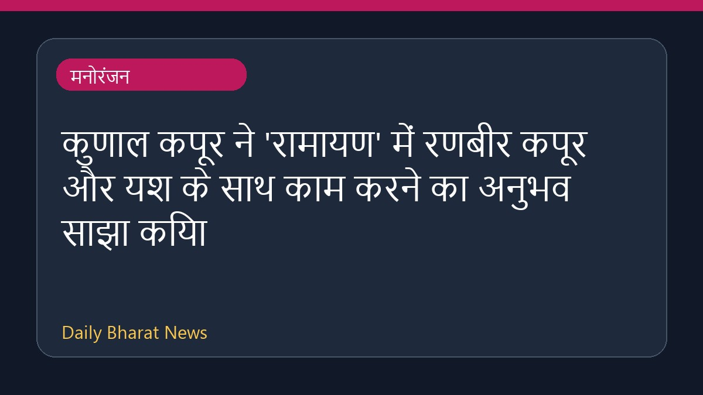

कुणाल कपूर ने 'रामायण' में रणबीर कपूर और यश के साथ काम करने का अनुभव साझा किया

अभिनेता कुणाल कपूर ने आगामी फिल्म 'रामायण' में रणबीर कपूर और यश के साथ काम करने को लेकर अपनी बात रखी है। कुणाल ने रणबीर कपूर की तारीफ करते हुए उन्हें स्टारडम के बोझ से मुक्त एक ऐसा सितारा बताया जो बेहद सहज हैं। इसके अलावा, उन्होंने यश के अभिनय की भी जमकर सराहना की और कहा कि 'रावण' के रूप में उनका प्रदर्शन बेहद शानदार है, जिसपर रावण को भी गर्व होता। इस फिल्म को लेकर मीडिया में काफी चर्चा हो रही है और कलाकारों के बयानों से दर्शकों की उत्सुकता लगातार बढ़ती जा रही है।
मूल स्रोत: Entertainment Sources
Kunal Kapoor On Working With Ranbir Kapoor In Ramayana: 'A Star Without Any Baggage Of Stardom' - NDTV ↗
Kunal Kapoor On Working With Ranbir Kapoor In Ramayana: 'A Star Without Any Baggage Of Stardom' - NDTV ↗